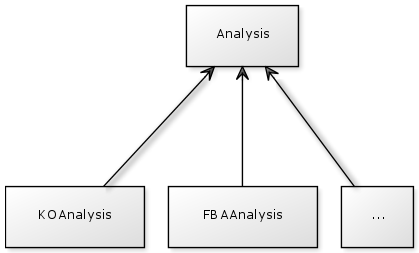

All information about the network : entities, constraints and interactions are accessible from the Bind class.
See the Javadoc for more details about all classes, methods and parameters.
The first thing to do when creating a new FBA based method is to create a new class in the package parsebionet.applications.flux.flexflux
This class has to be a main class.
Arguments are handled by the Java class library args4j.
For the graphical interface to work properly, you must respect a syntax for the Option annotation of your arguments :
Look at the analysis already written to be sure you are doing it the right way.
The class you create has to follow theses steps :
Example :
bind = new CplexBind(!f.nointInSolver);
Example :
bind.loadSbmlNetwork(f.sbmlFile, f.extended);
if (f.condFile != "") {
bind.loadConditionsFile(f.condFile);
}
if (f.intFile != "") {
bind.loadInteractionsFile(f.intFile);
}
bind.prepareSolver();
Example :
Analysis analysis = new YourAnalysis(yourArguments); AnalysisResult result = analysis.runAnalysis();
Example :
if (f.plot) {
result.plot();
}
if (!f.outName.equals("")) {
result.writeToFile(f.outName);
}
To be faster, you can just copy and paste an existing class (like FlexFluxFBA), change the arguments, the name of your method and make other potential changes.
All classes representing analysis extend the class Analysis and all analysis result classes extend the class AnalysisResult.
So you have to create two more classes :
YourAnalysis will contain all the actions that you method will make. You have to overwrite the function runAnalysis(). This method creates and returns your YourAnalysisResult object.
YourAnalysisResult contains all the data calculated by your analysis and must overwrite at least two methods :
For simple plots with tables FlexFlux uses Java Swing. For 2D plots it uses JFreeChart and for 3D plots JMathPlot.
This libraries are included in FlexFlux.
If you want to use multithrading, you must create a class that extends ResolveThread. Your threads have to be created in the runAnalysis() of your YourAnalysis class.
Threads are created with a copy of the original Bind object. For the right Bind object to be created, you must use the ThreadFactory to create your thread. This will create the right Bind object.
In order to do that, you must add a method in the ThreadFactory class and implement it in all it's subclasses (one class per solver).
Example :
In the ThreadFactory class :
public abstract YourThread makeYourThread(boolean interactionInSolver);
And in, for example, the ThreadFactoryGLPK class
public YourThread makeYourThread(boolean interactionInSolver) {
Bind bind = new GLPKBind(constraints, simpleConstraints, intNet,
bioNet, interactionInSolver);
return new YourThread(bind);
}
First, you must create a new class which extends Bind. This class will translate all problem's data into objects that your solver will understand.
Your have to implement the following methods :
Then, you have to add the construction of your new class on every Main class of FlexFlux (in the package parsebionet.applications.flux.flexflux) where the right bind is created.
For example :
if (f.solver.equals("CPLEX")) {
bind = new CplexBind(!f.nointInSolver);
} else if (f.solver.equals("GLPK")) {
bind = new GLPKBind(false);
} else if (f.solver.equals("YourSolver")) {
bind = new YourSolverBind(!f.nointInSolver);
} else {
System.err.println("Unknown solver name");
parser.printUsage(System.err);
System.exit(0);
}
Some analysis are using threads to run faster. Those threads need to copy the original Bind object.
To let the thread know what kind of Bind object they must create, your original bind has an attribute called threadFactory.
You have to create a new ThreadFactoryYourSolver class that extends the ThreadFactory class and that creates the right Bind objects.
For example in the class ThreadFactoryYourSolver :
public ThreadFVA makeFVAThread(boolean interactionInSolver,Queue<BioEntity> ents, Queue<BioEntity> entsCopy, FVAResult result) {
Bind bind = new YourSolverBind(constraints, simpleConstraints, intNet,bioNet, interactionInSolver);
return new ThreadFVA(bind, ents, entsCopy, result);
}
In the init() function of your YourSolverBind class you must add :
this.threadFactory = new ThreadFactoryYourSolver(constraints,simpleConstraints, intNet);
Depending on your solver there are two cases :
Your solver does not support interactions.
You have nothing more to do than add these two lines in the init() function of your YourSolverBind class :
this.operationFactory = new OperationFactory(); this.relationFactory = new RelationFactory();
Your solver supports interactions and you want to use it.
You have to create a relation factory and an operation factory for your solver.
Finally, add these two lines in the init() function of your YourSolverBind class :
this.operationFactory = new OperationFactoryYourSolver(); this.relationFactory = new RelationFactoryYourSolver();